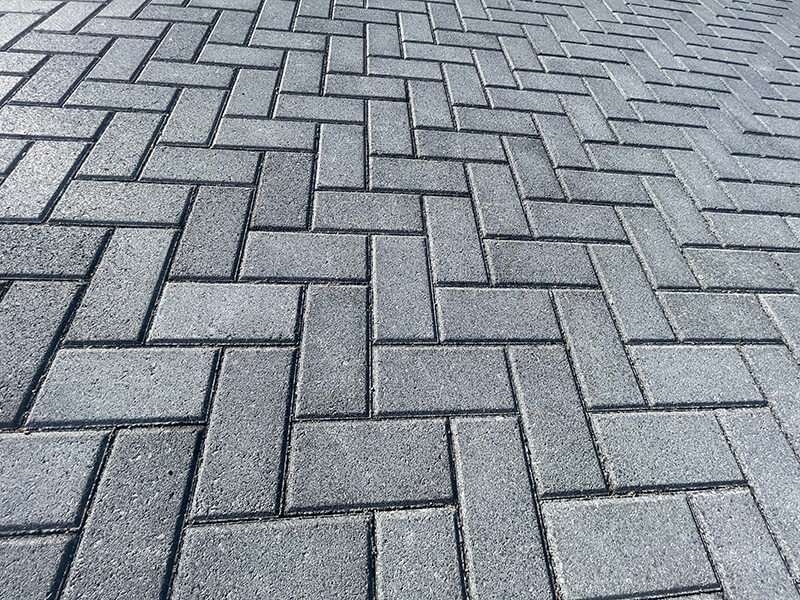
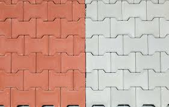
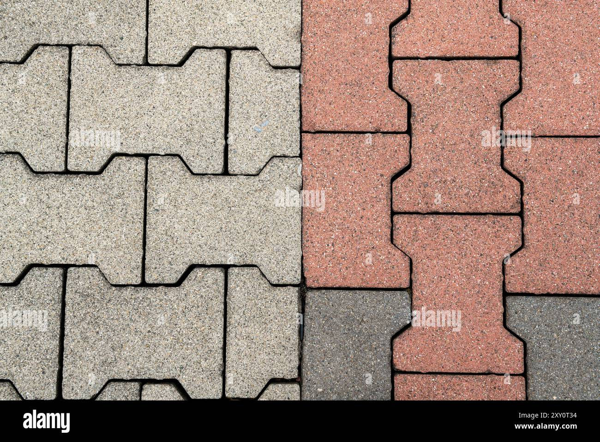

Interlocking stones, also known as pavers, are highly durable construction materials used for exterior flooring. Made from concrete, natural stone (like granite or limestone), or clay brick, they are engineered to connect tightly, often with jointing sand, to form a flexible, strong surface. This unique "lock-up" feature disperses weight, preventing cracking common in single-slab concrete and making them ideal for high-traffic areas like driveways, patios, walkways, and pool decks. They offer versatile design options due to their varied shapes, sizes, and colors, providing a low-maintenance, long-lasting, and aesthetically pleasing alternative for any landscape. A key benefit is the ease of replacing individual damaged stones.
This design principle, where parts constrain the motion of one another to form a unified, strong composition, can manifest in several aspect.

The "double T" design, often known as the double-T paver or I-beam paver due to its shape resembling a steel I-beam, is a popular choice for paving projects. Design & Function: The unique, self-locking shape provides superior hooking and stability, which is essential for surfaces exposed to heavy traffic and loads. Application: It is commonly used in commercial and industrial settings, such as parking lots, driveways, and pedestrian walkways, where durability is a primaryThe "double T" design, often known as the double-T paver or I-beam paver due to its shape resembling a steel I-beam, is a popular choice for paving projects. Design & Function: The unique, self-locking shape provides superior hooking and stability, which is essential for surfaces exposed to heavy traffic and loads. Application: It is commonly used in commercial and industrial settings, such as parking lots, driveways, and pedestrian walkways, where durability is a primary


We are the leader in Interlocking and stone. We strive to offer you only the highest quality workmanship and service. Contact us for Free, no obligation consultation and estimates
OPMMA & OPMMA VENTURES
Erinwole road, infront of sokoya memorial school
Along gra road
ogun State, Sagamu